RELEAF Perfusion
Bioreactor
This record is written so the device can be rebuilt from it. It does not meet that standard yet: suppliers and several specifications are still outstanding.
Purpose
1.1 From TgPGPR to a Bioreactor
Our original design put the engineering in the soil. A transgenic plant growth‑promoting rhizobacterium would colonize the roots and produce protectant where the plant needed it. No delivery, no hardware.
The flaw was control. Once a transgenic organism is released, expression, dose and spread are no longer ours to set. The bacteria produce whether or not the plant is stressed, and they travel with soil and water.
What we needed from the bacteria was the molecule, not the organism. So we moved the organism into a machine and left only the product in the field. Stress appears, the grower turns on the light, protectant is made and delivered. A release problem became a containment problem, and containment is something hardware can solve.
1.2 Why B. subtilis and Perfusion Hollow Fiber
Bacillus subtilis WB800 is well characterized, industrially proven, and native to the rhizosphere. Critically, it secretes protein into the medium, so the protectant is already outside the cell.
That makes separation a question of size. In a perfusion hollow‑fiber bioreactor, culture circulates through the fiber lumens while medium flows past on the other side. Protectant crosses the membrane; whole bacteria are too large to follow it. Exchanging medium as the run goes removes the need to grow to a peak and harvest. Holding density for weeks is the aim and has not been shown: the longest run with the membrane module fitted is about 53 hours (7.2).
1.3 Against Shelf Production
Centralized manufacturing suits stable chemicals. Many peptides degrade in storage, often require a cold chain, and lose potency before use.
The timing is also wrong. A bottle filled months earlier cannot respond to a drought that arrives this week. Producing on site means the protectant is fresh, the dose matches the conditions, and no one pays to refrigerate and ship water.
1.4 Role in the Project
RELEAF runs predict → produce → protect. The AIoT stage predicts plant stress and issues a light signal; this bioreactor is the produce stage that receives it. The LPA is the instrument built to establish which light conditions drive protectant expression, and the photometer is embedded in this loop as its eye. What leaves here is protectant drawn off the shell side, bound for soil or a hydroponic line; the two platings on record found no cells in it (5.1).
Hardware Highlights
2.1 Hollow‑Fiber Perfusion
Exchanging medium while the culture runs is the point of perfusion: waste leaves, nutrients arrive, and the run does not have to stop. No medium feed was fitted in integration v1, so continuous exchange is not yet tested (7.1).
2.2 Containment and Product Release
The membrane is the separation step. Pore size admits the protectant and excludes the cells, so the component that contains the organism is the component that delivers the product. Everything reaching the plant has crossed a barrier sized to stop whole cells.
2.3 Integrated Monitoring
An in‑line photometer reads OD600 through a flow cell without drawing a sample. pH sensing sits on the harvest side of the loop (2.5), and transmembrane pressure (TMP) is logged; no fouling trend over a long run has been reported yet (7.2). All of it reports to one operator interface ().
A machine intended to run unattended on a farm must be able to report its own condition.
2.5 How the Loop Is Laid Out
Everything in the record below refers to one of two fluid paths. They meet only at the membrane wall.
Culture loop
Medium reservoir → peristaltic pump → in‑line photometer → fiber lumens → back to the reservoir. Contains the organism. Closed for the duration of the run; the only access to it is the dual Luer valve listed in the bill of materials, used for bleed and sampling.
- Reservoir500 mL vessel, 300 mL working volume
- Inoculum20 mL multi‑overnight B. subtilis culture
- Flow rate94 mL/min
- Stirring200 rpm magnetic, added in cycle 2
Protectant harvest
The space around the fibers. Fills by diffusion across the fiber wall, is drawn off through the shell ports, and carries protectant to the delivery stage. The 0.2 µm rating passes the protectant freely — ACC deaminase runs at about 42 kDa on our blot — while still stopping whole cells; it does not stop everything, and what that costs in containment terms is set out in 5.1.
- MembranePES hollow fiber
- Pore rating0.2 µm
- Lumen volume~200 mL
- Area150 cm², eight fibers
- Deliverysoil or hydroponic line
The system, stage by stage
The full setup as designed, including the sensing and delivery stages that sit either side of the reactor itself.
As designed Two circuits, one membrane wall
- 1
Culture in the reservoir
A stirred 300 mL working volume. Expression is induced by a green light signal driven by the AIoT stress predictor. A magnetic stir bar runs at 200 rpm — added in cycle 2, after sedimentation was diagnosed.
- 2
Read without opening the loop
The peristaltic pump draws culture from the reservoir outlet, past the Luer sampling valve, and drives it at 94 mL/min through the in‑line photometer and into the top of the membrane column. The pump acts on the outside of the tubing only, so the fluid path is not breached at the pump head.
- 3
The only crossing
A hollow‑fiber membrane splits the system in two. This wall is the single place the two circuits touch, and the organism is retained on the lumen side.
- 4
Nothing leaves the culture loop
Culture returns down the lumens and through a pinch valve to the reservoir. Nothing leaves the culture loop except through the membrane wall.
- 5
Harvest, on the shell side
A second pump moves shell‑side fluid out of the column. Anything in that stream crossed the fiber wall, whose 0.2 µm pore is smaller than a B. subtilis cell; shell‑side medium plated in cycle 1 produced no colonies (5.1). The stream was cell‑free in both platings on record. Whether the cartridge stays intact through a run has not been tested (5.2).
- 6
Sensing the output
Shell‑side fluid passes an optical sensor and a pH sensor on its way out, reading the product stream after the membrane. Culture density itself is read upstream, in‑line in the culture loop by the photometer.
- 7
Regulate, then deliver
Shell‑side fluid passes a pH regulator on its way out to the delivery stages.
- 8
One closed loop, one open path
Culture circulates and never leaves. What crosses the membrane wall and goes to the field is the protectant together with anything else below the 0.2 µm pore — medium components, vesicles, debris (5.1). Whole cells are what the wall is there to stop. Containment is physical at the membrane wall; the Luer sampling valves are the one place procedure still matters.
Engineering the Bioreactor
Four tracks, each with its own design–build–test–learn cycles: growing the organism, reading it in line, controlling pressure and flow across the membrane, and running the whole loop together. Cycles that are outlined but not yet written are marked in orange.
3.1 Bacteria Growth
Two cycles, both on the membrane loop. The first ran at room temperature, leaked at the pump and grew almost nothing; the second put a stirrer under the reservoir and held 37 °C.
-
01
Culture B. subtilis WB800 at room temperature (22 °C)
Bacteria growth · Cycle 1 · Prototype I · 6 June 2026Design
The objective of this first design was a working continuous‑flow system around a PES hollow‑fiber membrane. The build that came out of it showed the structural limits and the hardware changes needed next. It comprises a PES hollow‑fiber membrane, a medium reservoir, a peristaltic pump and a Luer valve: a simple, continuous flow‑through mechanism (, ).
We used a PES hollow‑fiber protein membrane (lumen volume ~200 mL) connected to a 500 mL reservoir holding 300 mL of LB medium, inoculated with 20 mL of a multi‑overnight B. subtilis liquid culture.
Build
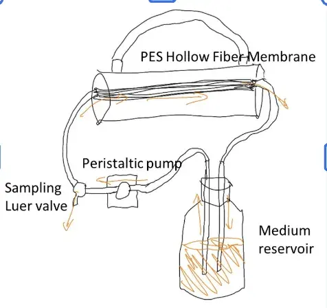
Prototype I The loop as designed: reservoir, pump, membrane and return, with a sampling Luer valve. On the bench The same loop, set up in June 2026. Test
The loop ran at room temperature. The peristaltic pump reached the target flow rate of 94 mL/min, but the trial ended early when medium leaked at the pump. Final OD600 readings were 0.304 in the tube and 0.48 in the medium reservoir (). To check whether any viable cells had crossed the membrane, 2 mL of medium was drawn from the shell side and plated on LB agar. No colonies formed (). That is the first evidence that whole cells were not reaching the shell side, from a single plating (5.1).
Cycle 1 OD600 against time for the bioreactor and a flask control. The flask culture grew to about 2.4; the bioreactor culture grew far less, from about 0.17 to 0.3–0.37 by the end of the run. 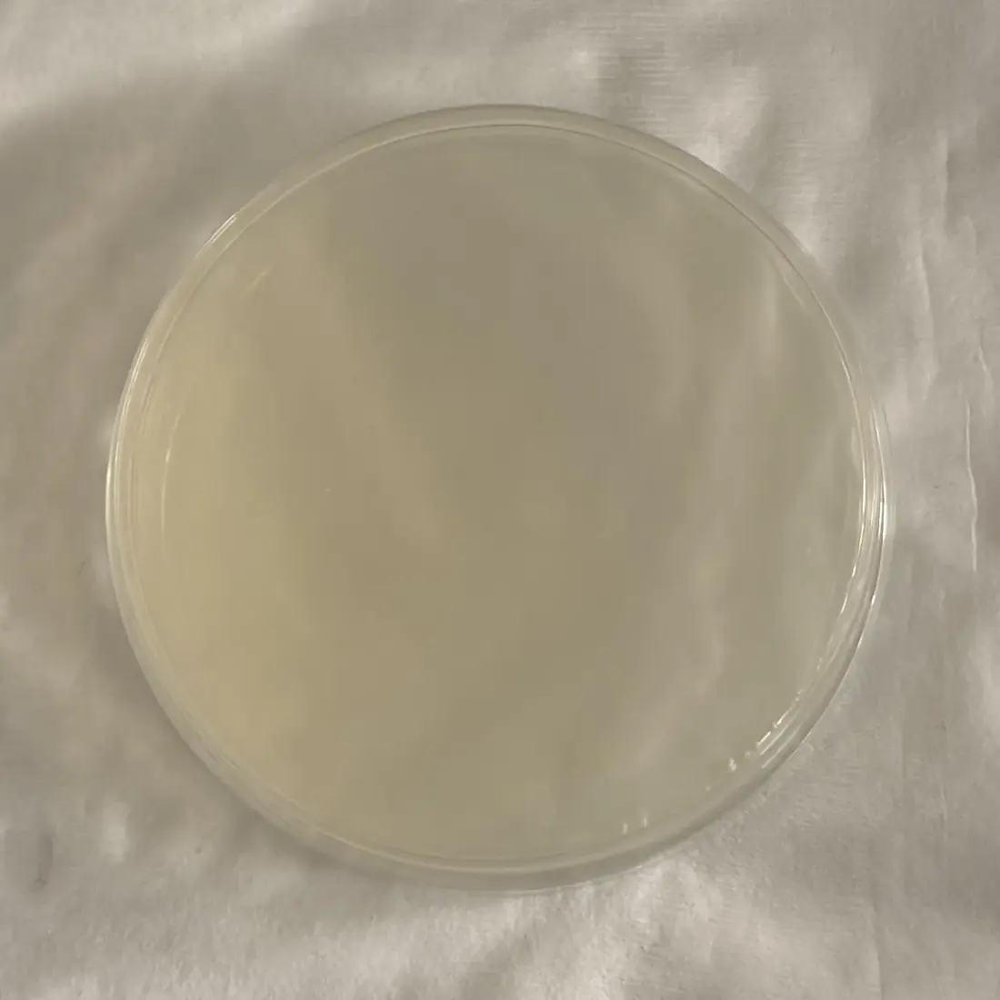
Containment check 2 mL drawn from the shell side and plated on LB agar. No colonies were recovered, so no culturable B. subtilis reached the shell side in this run. Single plating; replicate count and incubation time and temperature were not recorded (5.1). Learn
The divergent OD600 values between the tube and the reservoir indicated poor growth and pointed to two hardware limitations for the next cycle. We hypothesize that the lack of active mixing led to nutrient stratification and cell sedimentation in the reservoir, limiting growth. To stop the leak, the loop needed biocompatible BPT tubing, for higher durability and a more stable seal at the pump. To overcome the lack of growth, we planned an active magnetic stirrer, on the model of the laboratory hot‑plate stirrer, to prevent sedimentation and keep nutrients evenly distributed. And the sampling port was to move to the medium reservoir's outlet, for a cleaner reading and less contamination risk.
-
02
Culture B. subtilis WB800 at 37 °C
Bacteria growth · Cycle 2 · Prototype II · 14 June 2026Design
A 200 rpm magnetic stirrer was added to the medium reservoir to prevent sedimentation and keep nutrients evenly distributed. The sampler was moved next to the medium reservoir: the reservoir holds far more of the volume than the hollow‑fiber membrane, so a reading there is a better average of the OD of the whole bioreactor module ().
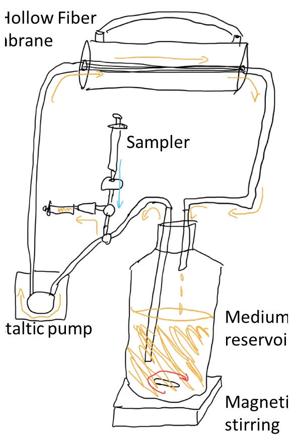
Prototype II The magnetic stirrer under the reservoir, and the sampler beside it. Build
Test
As before, the peristaltic pump held 94 mL/min for the whole run. This time the bioreactor (experiment) and a flask (control) were held at 37 °C instead of room temperature, and the run gave the full growth curve: the bioreactor reached its plateau (OD600 ~0.8–0.9) after 2 hours, the flask (OD600 ~0.6–0.8) after 4.5 hours.
0.8–0.9Reactor plateau OD6002hReactor, time to plateau4.5hFlask control, time to plateau37°CBoth arms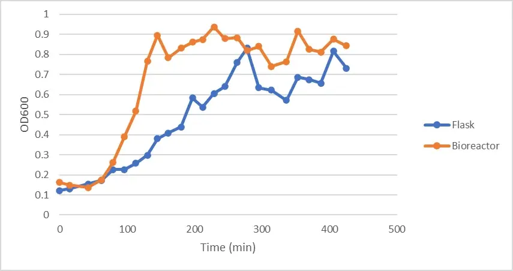
Cycle 2 OD600 against time for the bioreactor and the flask control at 37 °C. Both arms reach plateau; the reactor arm reaches it in less than half the time. The flask's working volume, inoculum and shaking speed were not recorded, so the arms are not matched — see below. Learn
The full OD600 growth curve supports continuous magnetic stirring as the fix for sedimentation. This cycle also changed the sampling point and the temperature, so stirring is not isolated as the cause. The next cycle will evaluate performance and growth kinetics at a reduced temperature of 22 °C. To keep the bioreactor reliable over long runs and stop the tube degradation seen in earlier trials, the next round of testing needs higher‑durability BPT tubing.
What it changed
Prototype II moved the stirring, the sampling point and the temperature at once, so the full growth curve it produced cannot be put down to any one of them.
3.2 In‑Line Photometer
The in‑line flow‑cell photometer is the optical‑density monitoring subsystem of the bioreactor. It draws continuous, live data from the lumen loop by passing the culture through a flow cuvette with a 0.2 mm path, where the optical density of the bacteria in solution is recorded and plotted — without ever drawing a sample. These are its design–build–test–learn cycles; the instrument itself, part by part, has its own record.
-
01
Light path
Photometer · Cycle 1 · bench layoutDesign
Before anything was printed we had to know where each optical component actually belongs. We used magnetic helping hands — the clip tool normally used to hold parts for soldering — to hold our amber 600 nm LED in line with a purchased paralleling lens. That gives parallel light, which a 2 mm slit then narrows so only a small portion of the beam continues through a beam splitter and on to two lux sensors.
Build
We locked the LED, slit, beam splitter and both lux sensors in position relative to each other and left only the paralleling lens free to move. Fixing everything else made the lens position the single variable. That is what let us read off the real‑world distances we would need for a 3D CAD model of the photometer layout — one that passes the light through smoothly and cleanly enough to gather consistent data. We did not have to guess at them.
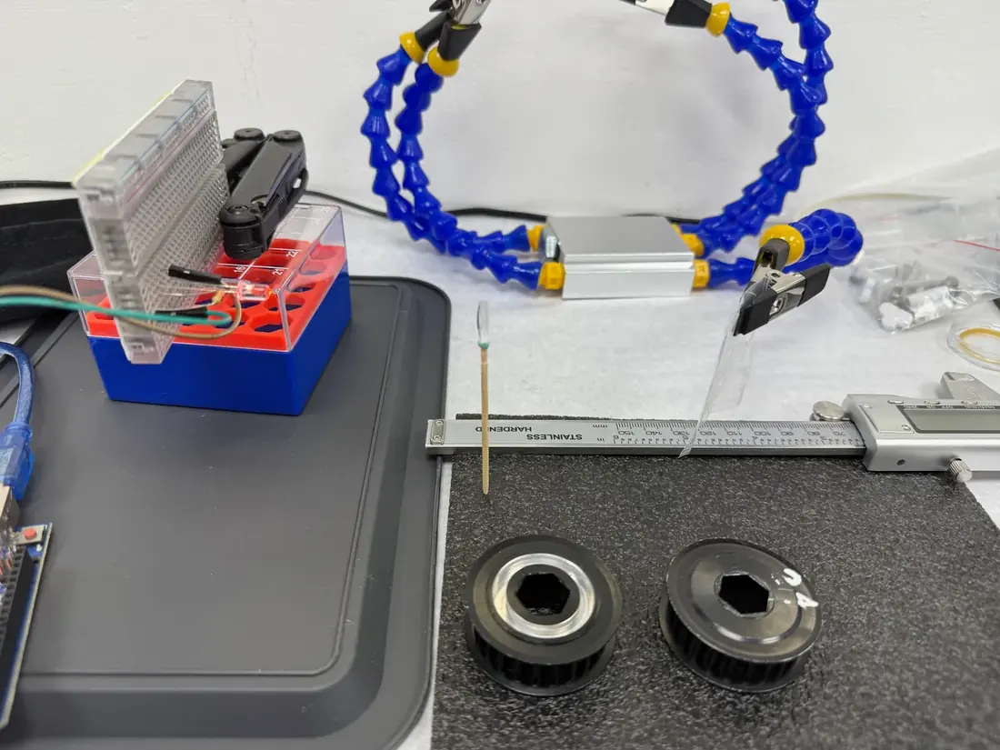
Bench layout The optical train held in helping hands, with the lens mounts and a caliper for the spacings. Test
With the other components locked down, we shifted the paralleling lens along the axis until the light path steadily illuminated both sensors, nudging the slit and the sensors slightly to bring the path into line. Then we measured the distance between every component and turned the layout into a drawing our dry‑lab hardware team could develop into a CAD model with everything anchored in place.
Learn
The measured spacings became the fixed geometry for every build after this one.
LED tip to lens
5.5 cm
Lens to beam‑splitter center
10 cm
Beam splitter to each sensor
2 cm
-
02
V1 — flat and adjustable
Photometer · Cycle 2 · V1Design
V1 turns the bench layout into a self‑contained instrument that sits in the loop. Two decisions shaped it. The light path stays flat and horizontal, since the bench arrangement was already on one plane and that was the most direct way to translate it into a printed part. And every component stays independently adjustable, because we did not yet trust the cycle 1 spacings to be final and expected to keep tuning the alignment. The flow cuvette goes in line with the recirculating loop instead of being filled by hand, so the culture is measured where it already flows and nothing has to be drawn out to read it.
Build
The whole optical train mounts on a single printed rail. Each component sits on the rail and slides along it, set by hand against the distances from cycle 1. The flow cuvette is plumbed into the recirculating loop with tubing at both ends, so the instrument reads the culture as it passes through.
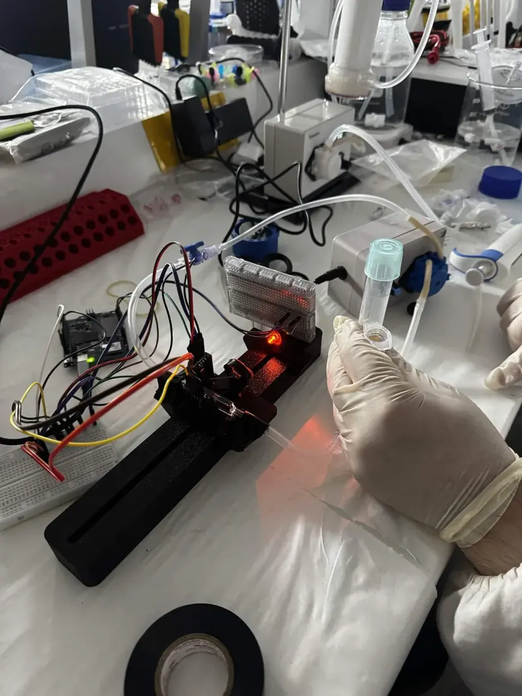
V1 In use on the bench. 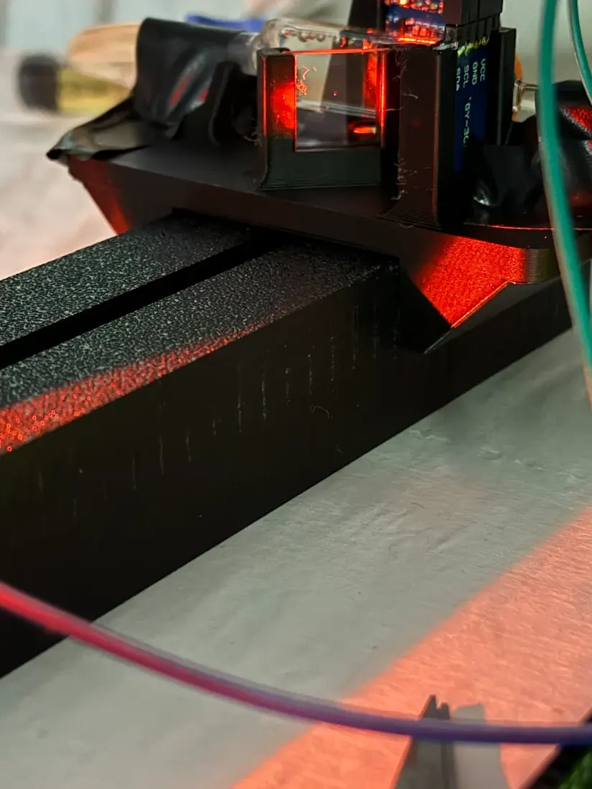
The beam Running along the flat printed rail. 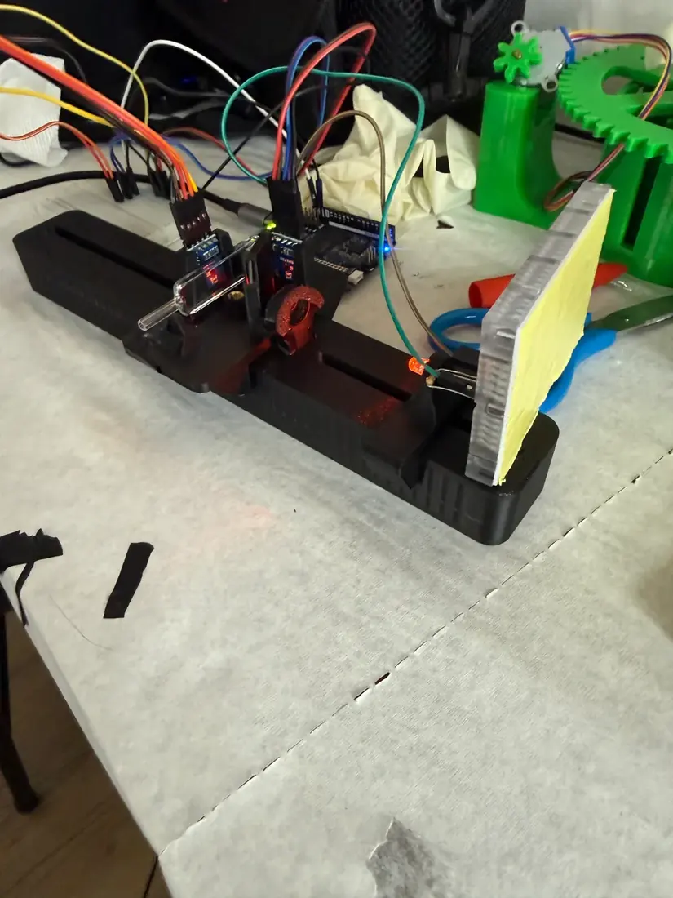
The rail Its sliding mounts and the sensor end. Test
Data fluctuation was far too drastic, from bubbles in the flow cuvette and from high tolerances on the lenses and beam splitter.
Learn
Two problems, both structural.
The data fluctuated drastically. Bubbles in the flow cuvette were sitting directly in the beam, and with a horizontal path a bubble had nowhere to go. It parks in the light and stays there until flow happens to push it out, so a single bubble can corrupt a long stretch of readings.
The independently adjustable mounts were also too loose. The lens and beam splitter could drift between runs, which meant the geometry we so carefully measured in cycle 1 was not actually being held. Adjustability helped during alignment and hurt everywhere else.
Both point the same direction: stand the light path up so bubbles rise out of it, and tighten the component tolerances.
-
03
V2 — vertical
Photometer · Cycle 3 · V2Design
V2 stands the light path up. The LED fires upward through the flow cuvette, so a bubble in the cell rises along the beam axis and leaves the light instead of settling in it. Buoyancy does the work here; relying on flow to sweep bubbles out is what failed in V1. We also gave up most of the adjustability in exchange for tighter seats, since by this point we wanted the cycle 1 spacings held, not adjusted.
Build
A wide square base plate was printed with a mounting adapter for the rail, so the assembly stands rigidly on the bench with the optical axis vertical. The component seats were tightened so the lens and splitter hold their measured positions.
V2 The optical axis stood vertical on a square base plate. Test
We ran two samples through V2 and compared the result against the BioDrop. The instrument was zeroed on the growth medium, so medium reads 0 by definition. The second sample was 2 mL of titanium dioxide suspension, which gives a stable scattering target that does not grow or settle out between readings the way a culture would.
V2 readings against the BioDrop2 samples
V2 readings — blank: medium Sample Sample sensor Reference sensor OD Medium 660 lux 92.5 lux 0 au 2 mL titanium dioxide 495 lux 92.5 lux 62.5 au The reference channel held at 92.5 lux across both readings. That tells us the source was stable between measurements, so the drop on the sample channel came from the sample and not from the LED.
Learn
The optics were not the main problem. Our calibration procedure was.
We had been blanking RELEAF against growth medium. The BioDrop is calibrated on distilled water. That means the two instruments were reporting absorbance relative to different baselines, and the roughly 20% disagreement we had been attributing to our optics was largely a procedural artifact.
This is where our calibration standard protocol comes from. The blank is distilled water, so our baseline matches the instrument we validate against, and every comparison after this cycle uses it.
-
04
Angled stand
Photometer · Cycle 4Design
Standing the path up helped, but bubbles still paused in the cell. Tilting the whole instrument means no surface inside the cuvette is horizontal, so a bubble has a continuous upward path along the wall and nothing flat to rest against. We put the tilt in a wedge under the body instead of the optics, which keeps the cycle 1 beam geometry untouched and lets us reprint the wedge at a different angle without disturbing the alignment. We also decided to stop treating bubbles as purely an optical problem and remove gas from the loop before a run instead.
Build
The body sits on a printed wedge with structural support underneath so it does not flex under its own weight. A dual Luer valve with syringes is fitted to the loop, used to bleed gas out before the instrument is started.
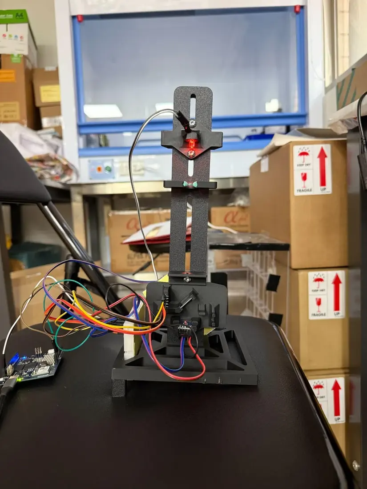
Angled stand The optical column tilted on its printed wedge. Test
We zeroed on medium and ran two titanium dioxide suspensions through the same cell, 1 mL and 2 mL, using titanium dioxide because it scatters light consistently and does not grow or settle the way a culture would. The sample channel dropped from 137.63 lux on the blank to 120.44 lux at 1 mL and 111.62 lux at 2 mL. The reference channel sat at 17.23 lux on the blank and 18.33 lux on both samples.
Angled‑stand readings3 samples
Angled‑stand readings — blank: medium Sample Sample sensor Reference sensor OD Medium 137.63 lux 17.23 lux 0 au 1 mL titanium dioxide 120.44 lux 18.33 lux 0.3712 au 2 mL titanium dioxide 111.62 lux 18.33 lux 0.5785 au Learn
The instrument responds in the right direction and separates the two concentrations cleanly, so the tilted geometry holds up. Doubling the titanium dioxide only moved the reading by a factor of 1.56, which we cannot yet explain from this data alone.
The reference channel is the bigger finding. It moved 6.4% between the blank and the samples, and the reference beam is split off before the sample, so nothing in the cuvette should be able to change it. Either the source drifted or the reference path is picking up light it should not see. Ambient light is the other candidate, since the path is open to the room and neither sensor is shielded from it. A reference channel we cannot trust is a reference channel we cannot correct with.
Everything so far has also been static samples held in the cell. Titanium dioxide tells us the optics work, but it does not move, does not grow, and does not produce bubbles. The instrument has to hold up on culture flowing through the loop over a long run before any of this means anything.
That is what shapes V4. We need the light path enclosed from the LED to both sensors so only our own source reaches them. We need direct control of the LED instead of a fixed drive, in case the source itself is drifting. We need to see both channels live during a run instead of reading them off at the end. And then we need to put real culture through it.
-
05
V4, and the 22 °C growth curve
Photometer · Cycle 5 · V4 · continuous B. subtilis WB800 runDesign
V4 is the version we ran the long experiment on. Three changes carry it.
- Component positions are fixed at their default alignment. Nothing slides any more, which removes the drift that hurt V1.
- Every mount surface that touches glass is lined with TPU. It grips the cuvette and lens firmly and stops the rigid printed material scratching the optical surfaces. Scratches on a 0.2 mm cuvette window are not cosmetic, since scattering from a damaged surface reaches the same detector as scattering from cells.
- Snap‑in covers run the full length of the light path from LED to sample sensor, so no room light reaches either detector. A photometer that responds to the lights being switched on is not measuring the sample.
Build
The instrument runs on an Arduino UNO Q. Both lux sensors report over the same bus. The interface is a live web dashboard served on the local network, so the run can be watched from any machine without touching the rig. The dashboard shows current OD600, elapsed time, sample lux, reference lux, the sample‑to‑reference ratio, the bubble and outlier rejection rate, and the running data‑point count.
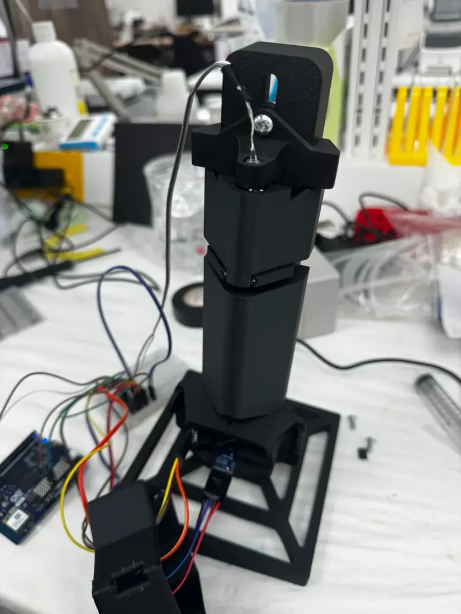
V4 Fixed mounts, TPU‑lined seats and snap‑in covers along the light path. 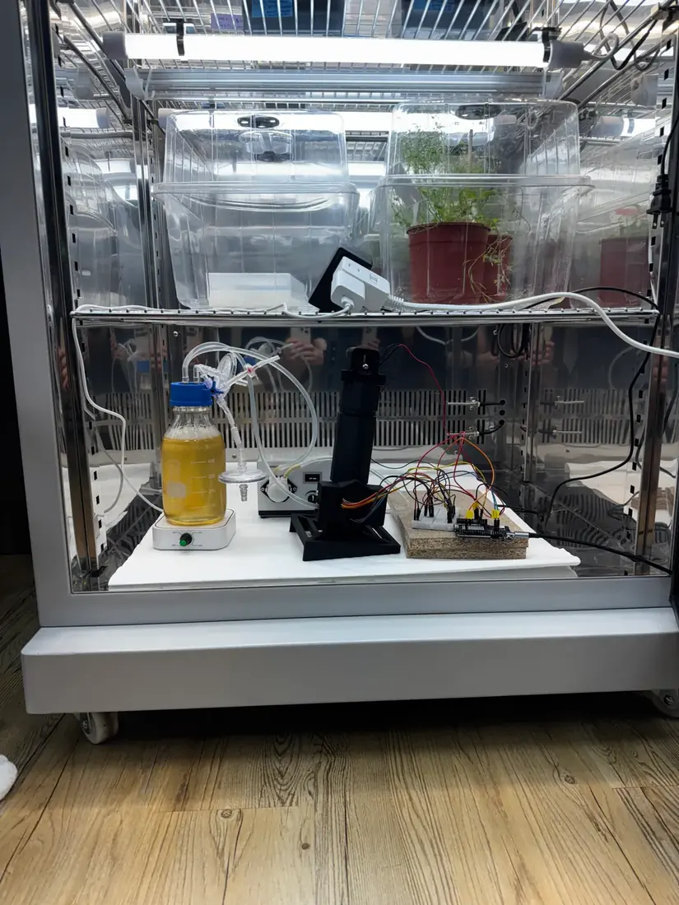
The long run V4 logging the culture inside the incubator. Test
A continuous run of engineered B. subtilis WB800 at 22 °C, drawn from the bioreactor loop and passed through the flow cell in line, so no sampling event interrupted the culture and no material was removed to measure it. The run passed 400 hours.
Continuous record Traced from the live dashboard at 14 d 0 h 11 m — the first 336 h of the run, 2,132 points. The band is the raw scatter, the line its median. Dashboard snapshots3, one run
Dashboard snapshots — one continuous run Elapsed Points OD Sample Reference Ratio Rejected 3 d 7 h 57 m 586 0.7661 171.67 lx 26.67 lx 6.44× 42.9% 6 d 20 h 58 m 1097 0.7683 171.49 lx 26.67 lx 6.43× 14.3% 7 d 21 h 28 m 1244 1.1804 141.85 lx 26.67 lx 5.32× 0% Learn
The run covers lag through decline in one unbroken series, which is the thing a manual sampling routine cannot produce. It is also where the instrument's limits became visible.
- Noise is tight below about 0.4 OD and ragged above about 0.8, so the useful precision is not flat across the range.
- The rejection rate moved from 42.9% to 14.3% to 0% within one run. Those cannot all be cumulative, and the rejection rule had not been written down; it needed stating as a rule, including the window the rate is computed over, before filtered data could appear here. It is now specified in the photometer record: each reading is a burst of 14, and 42.9% and 14.3% are exactly 6 and 2 of 14.
- The dashboard expects a sample‑to‑reference ratio near 10:1 and we measured 5.3× to 6.4×, so either the split ratio or the expectation is wrong.
- The run's notes leave it unresolved whether the reported OD uses the reference channel or only sample against blank; the two disagree, and that has to be settled before the growth curve can be published. The doc's photometer tab now writes the calculation out: OD600 = −log[ S / (K·R) ], with K the sample‑to‑reference ratio on the blank. The dashboard reports five times that value; with the factor, all three snapshots above reproduce with one K ≈ 9.16.
-
06
Calibration using TiO2
Photometer · Cycle 6 · two calibration runs against the BioDropDesign
We needed a way to make sure the photometer's readings align with real‑world values. Calibrating with culture would bring problems of growth time, settling and cell lysis, so we chose a TiO2 suspension as a stable scattering target. The iGEM standard for OD600 calibration uses SiO2, but TiO2 was readily available, performed nearly the same when suspended in 1% SDS solution, and was much cheaper, so we deferred the SiO2 calibration and prepared known concentrations of TiO2 in 500 mL of solution.
A BioDrop cuvette spectrophotometer was the reference instrument, and the calibration curve was run twice. The two tests probed different things. In Test 1 we added TiO2 1 mg at a time for 40 data points, a dense, uniform series that resolves how linear each instrument is. In Test 2 we added 1 mg at a time up to 10 mg and then 5 mg at a time up to 60 mg, the cleanest direct agreement comparison once linearity was established. Starting with small increments was deliberate: it gives a more accurate low‑density region, in case the in‑line photometer proved inaccurate at low values.
Build
The calibration loop consisted of a magnetic stirrer, a peristaltic pump, our photometer, and a 500 mL reservoir. The reservoir cap had holes for the inlet of the photometer loop, the outlet of the loop, a sampling port, and an air hole that prevented a vacuum from forming during sampling or pressurization when adding TiO2.
Because scattering rises linearly with the mass of an inert suspended particle, the mass of TiO2 added is a common ground‑truth axis against which both instruments can be judged independently, not only against each other.
Test
Two single‑point exclusions were applied, each on objective grounds, and both are shown as open markers instead of being deleted. In Test 1 the 37 mg BioDrop reading is a handling error, off the trend of its neighbors. In Test 2 the 5 mg BioDrop reading breaks monotonicity — it exceeds the readings both above and below it, which is impossible for an increasing standard. In both cases the paired RELEAF reading is on trend, which puts the error in the reference measurement.
Baseline linearity (Test 1). The raw, uncalibrated RELEAF output agrees with the BioDrop to a large extent: plotted as RELEAF against BioDrop, Test 1 has a slope near 1 and an intercept near 0 ().
Test 1 BioDrop OD600 against the raw photometer reading for each TiO2 mass from 2 to 41 mg, drawn from the run's workbook, with a least‑squares line and the line of identity. Linearity against the ground‑truth standard (Test 2). Plotted against TiO2 mass added, both instruments track the standard closely across the full range, each regressing against mass at R² > 0.999 (RELEAF 0.9999, BioDrop 0.9998). The raw uncalibrated output is linear in true concentration to the same degree as the reference instrument ().
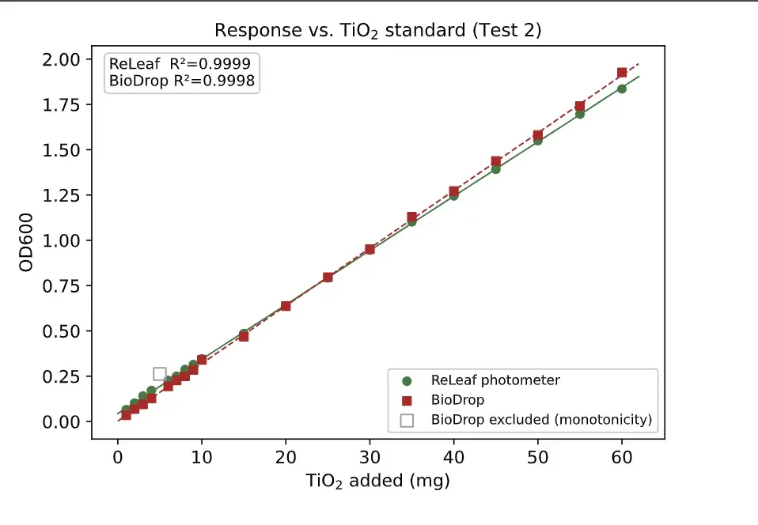
Test 2 OD600 of each instrument against TiO2 added, each with its own fit. Direct agreement with the reference (Test 2). Plotted directly against the BioDrop with the line of identity, the raw RELEAF points fall along y = x, agreeing to a median paired difference of 3.8%. The raw, uncalibrated instrument therefore matches the reference across the working range without any transform. A line fit through the raw Test 2 points has a residual scatter of RMSE = 0.011 OD600 (R² = 0.9997) about that line; this quantifies how tight the raw agreement is and is not a correction applied to the data ().
Test 2 RELEAF against the BioDrop, with the line of identity. Corroboration across the two runs. The two runs agree with the BioDrop to within a few percent independently of each other — Test 1 with fine, uniform 1 mg steps reaching higher density, Test 2 with coarser steps over a narrower range. Two separate runs hold that agreement, so it is not an artifact of one fit, and the readings can be trusted across the working range with no calibration step.
Learn
The runs answered the question we built them for, but not in the way we expected. We expected the RELEAF readings would need a calibration transform, fitted against the BioDrop, to report real‑world OD600; instead the two runs showed that no calibration is needed. The raw, uncalibrated output already sits near one‑to‑one with the reference (median paired difference under 4%) and tracks the ground‑truth mass standard with a residual scatter comparable to the BioDrop's (Test 1, 2–40 mg: 0.030 against 0.031 OD600).
This changed our plan. Agreement is already within a few percent, and the BioDrop is itself the slightly less linear of the two instruments against the ground‑truth standard, so fitting our readings to the BioDrop would tie them to the reference instrument's own measurement error without improving agreement that is already tight. A calibration step could make the readings worse. On the evidence of these two runs calibration is unnecessary; it is not an outstanding step, and every reading in this record, the continuous growth curve included, is reported directly from raw uncalibrated RELEAF output.
Two properties emerged from this cycle. First, within the range where a cuvette spectrophotometer is trusted, the uncalibrated photometer matches it to within a few percent across the full working range. Second, and categorically, the RELEAF photometer records these readings in line and continuously, drawing culture through the flow cell without withdrawing a sample or interrupting the culture. A cuvette instrument cannot monitor a live bioreactor; it measures grab samples one at a time. That continuous capability, demonstrated in cycle 5, is what makes the instrument useful for closed‑loop monitoring.
The SiO2 calibration we deferred in the design stage remains available as a future check, but on the strength of the TiO2 comparison it is a confirmation step, not a dependency.
-
07
Calibration using SiO2
Photometer · Cycle 7 -
08
Simplified photometer
Photometer · Cycle 8
What it changed
The calibration transform this track was built to produce turned out to be unnecessary. The raw output already sits within a few percent of the reference instrument, so no transform is applied to any reading in this record.
3.3 Hollow‑Fiber Membrane, Pressure and Flow Control
Four cycles are outlined here and none has been run. Transmembrane pressure is the quantity they would measure, and it is the record's highest open parameter (7.2). The feed, retentate and permeate transducers that give it are fitted and logging ().
-
01
Pressure transducer
Membrane, pressure and flow · Cycle 1 · outlined -
02
Transmembrane pressure and ΔP–Q measurement, round 1
Membrane, pressure and flow · Cycle 2 · outlined -
03
Flowmeter and ΔP–Q measurement, round 2
Membrane, pressure and flow · Cycle 3 · outlined -
04
Magnetic pump test
Membrane, pressure and flow · Cycle 4 · outlined
3.4 Bioreactor Integration
One cycle on record and two outlined. ACC deaminase sits under a constitutive promoter in this build, which takes light control out of the test and leaves the loop itself as the thing being examined.
-
01
Bioreactor v1
Integration · Cycle 1 · ACC deaminase under a constitutive promoterDesign
This cycle tests integration, not the optogenetic circuit. ACC deaminase is placed under a constitutive promoter so the strain expresses continuously, which removes light control as a variable. Culture circulates through the lumen side, protectant crosses into the shell side, and cells are retained. Everything else in the loop exists to keep that separation running unattended. A peristaltic pump circulates the culture, a medium reservoir feeds it, the in‑line photometer reads OD600 without opening the system, and pressure and flow sensors confirm perfusion holds at the set rate.
Build
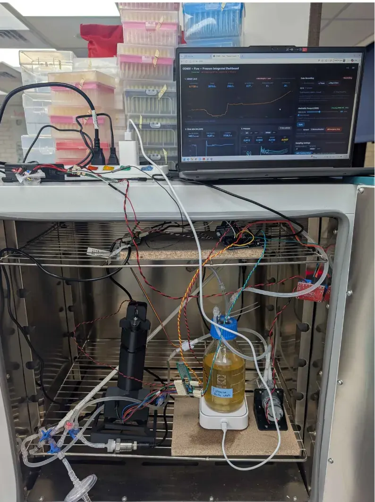
Bioreactor v1 The integrated loop running, with the dashboard on the laptop above it. Operator dashboard 4 September 2026, 53 h into a recording: OD600 with its sample and reference channels, flow rate, and feed, retentate and permeate pressure with the transmembrane pressure computed from them. Test
Engineered B. subtilis was run in the system and ACC deaminase was secreted across the membrane ().
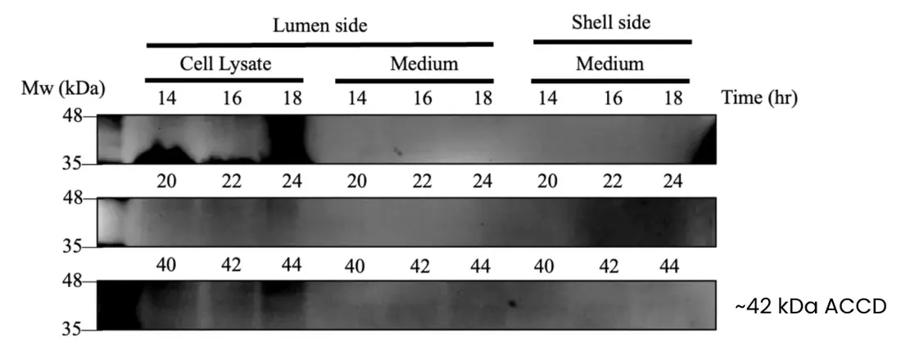
Western blot Lumen‑side cell lysate and medium, and shell‑side medium, sampled from 14 to 44 h; the ACC deaminase band is marked at ~42 kDa. At this size a shell‑side band is faint at best. Learn
ACC deaminase was successfully secreted to the shell side, but expression is weak.
-
02
Bioreactor v2
Integration · Cycle 2 -
03
Bioreactor v3
Integration · Cycle 3
What it settled
ACC deaminase reaches the shell side, and expression is weak. How much arrives there has not been measured (7.2).
Final Design (Lab)
4.1 Key Specifications
Ten specifications define the lab design. The values below are the ones stated elsewhere in this record and in the draft assembly guide (6.2); where the final design's value is not yet recorded, the row says so.
The ten specifications, as recorded10 rows
| Specification | As recorded |
|---|---|
| Working volume | 300 mL of LB in a 500 mL reservoir, as run in bacteria growth cycles 1–2 (3.1). The assembly guide's parts list has two 1 L reservoirs and a 100 mL one. |
| Membrane | PES hollow fiber, 0.2 µm pore, ~200 mL lumen volume (2.5) |
| Flow rate | 94 mL/min on the culture loop, held by the peristaltic pump in cycles 1–2 (3.1); about 371 mL/min on the 4 September integration‑v1 dashboard () |
| Stirring | Magnetic stirrer and stir bar, 200 rpm, in the reservoir, from cycle 2 (3.1) |
| Tubing | Biocompatible BPT tubing, called for after cycle 1 leaked at the pump and still planned after cycle 2 (3.1) |
| Temperature | 37 °C for the growth curve on the loop (3.1); 22 °C for the 400 h photometer run (3.2) |
| Pumps | BP1000‑DNUN64B electric peristaltic pump, 1 L/min; H0009 liquid pump, 1.5 L/min; CKP‑DC‑S08, 5 mL/min |
| Sensors | In‑line photometer for OD600; feed, retentate and permeate pressure transducers, with transmembrane pressure computed on the dashboard; flow meter; pH sensor; droplet sensor (5.2); a turbidity meter for protectant level, in the doc's user‑manual outline |
| LEDs | 3 m green‑light LED strip, switched by the stress prediction to induce expression (1.4). The doc's brochure draft gives green at about 526 nm to switch expression on and red at about 670 nm to switch it off (CcaS–CcaR). |
| Pressure regulation | Pinch valve, outlined for integration cycle 2 (3.4). Feed, retentate and permeate read about 0.20 bar each on the 4 September dashboard (). |
Containment & Safety
Making sure synthetic organisms do not enter the wild is a responsibility for everyone working with genetically modified organisms. Biosafety is likewise a top priority for the RELEAF bioreactor.
5.1 How B. subtilis Is Contained: Cell Size vs. Membrane Pore Size
Containment in the RELEAF bioreactor is by size exclusion at the membrane. The hollow‑fiber membrane is a physical barrier between the lumen side, where the culture circulates, and the shell side, where the product leaves: its pore size, 0.2 µm, is smaller than the cell diameter of B. subtilis, 0.25 to 1.0 µm ().
To test it, medium was collected from the lumen and the shell side while the bioreactor was running, plated, and compared after 24 h at 37 °C. Colonies grew from the lumen side and none from the shell side (): in this test the membrane held B. subtilis on the lumen side — the physical barrier the design relies on to keep it from being released. Cycle 1's plating of 2 mL of shell‑side medium had the same result.
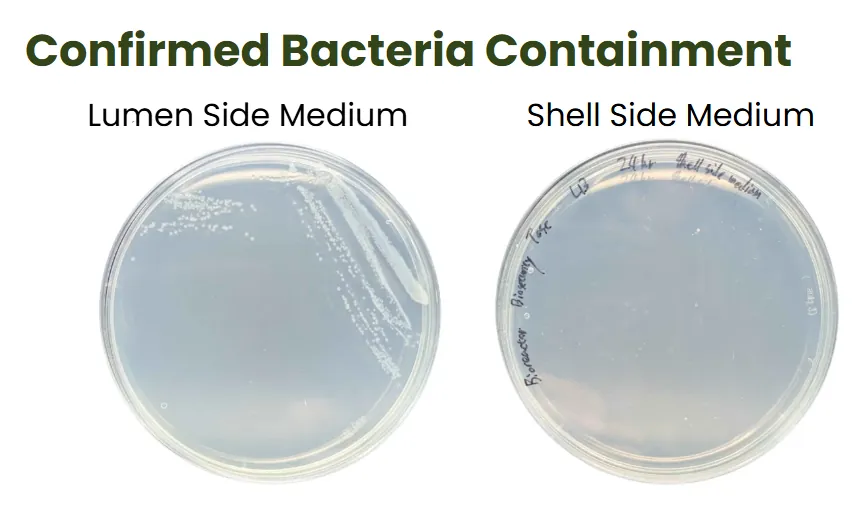
An earlier version of this specification claimed a 50 kDa molecular‑weight cut‑off and stated that the membrane retains secreted membrane vesicles. Neither is correct for the part fitted, which is rated 0.2 µm — large enough to pass ACC deaminase, which is its intended function, and therefore large enough to pass small vesicles and cell debris. Containment here rests on cell size alone. The earlier claim was withdrawn in week 18.
5.2 Safety Precautions: Leak Prevention
The RELEAF bioreactor carries several safeguards against accidents during operation. Leak prevention relies on two complementary systems: one for liquid escaping the setup, one for faults inside the membrane module.
External leaks: the droplet sensor
A droplet sensor sits beneath the entire setup and detects any liquid escaping from the system. When it senses moisture it alerts the user through the software interface, so the leak can be dealt with before it causes damage or contamination.
Internal faults: transmembrane pressure
The system continuously monitors the transmembrane pressure (TMP) across the hollow‑fiber membrane. A leak or membrane breach reduces the pressure difference between the lumen and shell sides, so an abnormally low TMP is an early sign of a failure, often before any liquid can be seen.
Between them the droplet sensor and the pressure trace cover two different failures: liquid outside the loop, and a breach inside the membrane module. Neither has been tried against a deliberate leak or a deliberate breach, so the alarm path is not yet tested (7.1).
Reproduction
6.1 Materials List
| Component | Qty | Cost (TWD) |
|---|---|---|
| Hollow-fiber membrane | 1 | 7,800 |
| Pump | 4 | 2,500 |
| Pressure sensor | 3 | 1,800 |
| pH sensor | 1 | 2,450 |
| Flow meter | 1 | 350 |
| Sampler | 1 | 400 |
| Air filter | 1 | 300 |
| Reservoir | 2 | 180 |
| Magnetic stir bar | 1 | 120 |
| Luer valve | 5 | 150 |
| Luer lock | 20 | 400 |
| Spectrophotometer (reference, not built in) | 1 | 14,000 |
| Parts total | 16,450 | |
| Sheet total, with the reference spectrophotometer | 30,450 |
Costs are as entered on the team's component sheet, in New Taiwan dollars. The sheet does not say whether a price is per unit or per line, and its total adds the column — about US$960 at the sheet's own conversion. The spectrophotometer is the reference instrument the photometer is checked against, not a part of the build: without it the parts come to NT$16,450.
6.2 Assembly Guide and Brochure
The build, segment by segmentworking draft
Working draft
The four membrane segments
One segment connects each of the membrane's four ports — In‑Lumen, In‑Shell, Out‑Lumen and Out‑Shell — and all four are built the same way.
For each segment
- 1× filter
- 7.5 cm of tubing
- 2× Luer valves
- 1× pressure transducer
- Wiring
- Cut the tubing into three sections, A, B and C.
- Connect the sections to the first Luer valve: A to the left port, B to the middle, C to the right.
- Attach the middle section (B) to the filter.
- Attach the left section (A) to the pressure transducer.
- Attach the right section (C) to the middle port of the second Luer valve.
Main assembly
Materials
- Tubing
- 1× BP1000‑DNUN64B electric peristaltic pump, 1 L/min
- 1× H0009 liquid pump, 1.5 L/min
- 1× CKP‑DC‑S08 pump, 5 mL/min
- 1× flow cuvette
- 1× pH sensor
- 1× magnetic stirrer and stir bar
- 1× droplet sensor
- 1× filter
- 1× flow meter
- 2× 1 L reservoirs
- 1× 100 mL reservoir
- 1× 3 m green‑light LED strip
- 4× Luer valves
- 1 pair of gloves
- Put on the gloves.
- Attach the In‑Lumen, In‑Shell, Out‑Lumen and Out‑Shell segments each to its own side of the hollow‑fiber membrane.
- Connect the other end of the In‑Shell segment to one end of the flow cuvette with a 3‑inch tube. Tug the tube and the cuvette's other end to check the fit — gently, as the flow cuvette breaks.
- Connect a 2‑inch tube to the “In” of the flow meter, the side the arrow points away from.
- Connect the other side of the flow meter to the “In” of the BP1000‑DNUN64B pump, its left side, with a 4‑inch tube.
- Connect the “Out” of the pump to a hole in the cap of the shell‑side reservoir, one of the 1 L reservoirs, with a 6‑inch tube.
- On the inner side of the same hole, attach a ~3‑inch tube that reaches near the bottom of the reservoir, clear of the center, where the stir bar turns, and not pressed against the wall. Assemble with the cap off, and check again once the cap is back on.
- Connect a 2‑inch tube from the “Out” of a filter to another hole in the cap of the shell‑side reservoir. It needs no inner tube: its only job is to let oxygen and gas into the system without affecting sterility.
6.3 Culture and Medium
Organism
B. subtilis WB800; engineered strains in the 400 h run and integration v1
Medium
LB, 300 mL working volume
Inoculum
20 mL multi‑overnight liquid culture
Temperature
37 °C in growth cycle 2; 22 °C for the 400 h photometer run
Limitations & Future Plans
7.1 What This Reactor Has Actually Shown
Demonstrated
- No B. subtilis found on the shell side (two platings). Shell‑side medium plated on LB agar produced no colonies, in cycle 1 and again beside a lumen‑side plate that grew. Bacteria growth, cycle 1 · 5.1 Containment · two platings
- ACC deaminase reaches the shell side. Engineered B. subtilis in the integrated loop secreted it across the membrane, with weak expression. Integration, cycle 1 · western blot
- The culture reached plateau in the reactor. It did so faster than the flask arm run alongside it, on a comparison that is not controlled. Bacteria growth, cycle 2 · see the caveat there
- The photometer needs no calibration transform. Raw readings of a TiO2 standard agree with the BioDrop across two separate runs. Photometer, cycle 6
- The loop runs closed. OD is read in line, so the vessel is not opened to produce the OD trace. 2.5 How the Loop Is Laid Out
- A wrong claim was found and withdrawn. The 50 kDa cut-off and the vesicle claim were checked against the part actually bought. Week 18
Not established
- How much product is in the harvest stream. The blot shows ACC deaminase on the shell side, weakly; no concentration or transfer rate has been measured. 7.2 Open Parameters · transfer rate open
- Containment with an n. Two platings, with no replicate count stated for either, and no incubation conditions for the first. 5.1 Containment · and the pore passes vesicles and debris
- The flask comparison as a controlled test. Flask volume, inoculum and shaking speed are unstated, and prototype II changed three variables at once. Bacteria growth, cycle 2 · stirring not proven on its own
- Why either arm plateaus where it does. No aeration path is described for the cycle 2 rig (the later assembly draft adds a vent filter, 6.2), and dissolved oxygen was not measured, so oxygen limitation is not excluded. Cycle 2 · oxygen not measured
- Membrane integrity over a run. The platings test the barrier at a moment. Transmembrane‑pressure monitoring is designed to flag a breach during a run, but no alarm test or cartridge integrity check is recorded. 5.2 Leak prevention · the barrier is the only containment stage
- Continuous operation. No medium feed was fitted in integration v1, so volume taken off on the shell side was not replaced. The final parts list adds a 5 mL/min pump and a 100 mL reservoir, but not what they feed. Integration, cycle 1 · a refill mechanism is future work, 7.4
- Fouling and service life. Transmembrane pressure is now logged, but no fouling trend over a multi‑day run has been reported. 7.2 Open Parameters · highest‑priority open parameter
- Field temperature on the membrane loop. Cycle 1 ran at room temperature and ended early; the growth curve on the loop is at 37 °C. Bacteria growth, cycle 1
7.2 Open Parameters
Membrane fouling
Highest priorityA cake of retained cells, plus protein and debris, accumulating on the lumen wall will reduce flux and eventually protectant transfer. No fouling measurement has been made over a long run, and it is the most likely limit on service life.
Transmembrane pressure logged across a multi‑day run — the feed, retentate and permeate transducers that give it are now fitted.
Protectant transfer rate
OpenHow fast product crosses into the shell side, and whether it, not growth, sets system throughput. The blot shows that it crosses, not how fast.
Shell‑side concentration against time.
Field temperature
OpenThe growth curve on the membrane loop is at 37 °C. The device will run near 22 °C.
A 22 °C growth curve on the membrane loop.
Run duration
OpenThe longest recording known to have the membrane module fitted is about two days (53 h, integration cycle 1). The 400 h photometer record was drawn from the bioreactor loop, in the doc's words. Field use implies weeks.
An extended run with the membrane module fitted and the photometer logging throughout.
7.3 What Would Make This Deployable
- A multi-day run with the photometer logging continuously, to establish that the loop is stable over the timescale a field deployment needs.
- A fouling curve from transmembrane pressure, turning a two‑day run with the membrane into a stated service interval.
- 22 °C kinetics, so the throughput claim comes from field conditions and not an incubator.
- Replicated containment plating with a stated n, so the safety claim carries a number.
- A costed BOM against a named commercial perfusion system.
7.4 Future Plans
With a constrained timescale, the team could not complete everything it had in mind. The two main goals still open are the three‑chamber bioreactor and a quick‑slot B. subtilis and medium refill mechanism.
Three‑chamber concept
The three‑chamber concept arose while we were researching which protectants our B. subtilis should produce and secrete. We broadened the search from one to three: ACC deaminase, LEA peptide and BoPep4. Those three became the framework for our hardware designs.
They target different types and combinations of plant stress, so a small‑scale farmer is better served by direct access to all three than by having to choose one. That led to a concept of three isolated compartments, in which green and red light switch on to determine which protectant is produced and secreted for the plants.
What we could not yet complete is a fully sterile, modular compartment system that is easy to reproduce: the 3D prints we used cannot be made completely waterproof, which limits how easily the chambers can be produced and tested. We have instead designed the concept in CAD, to show that the idea is viable.